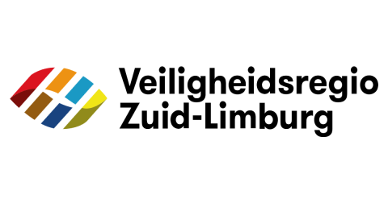
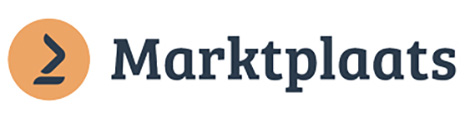
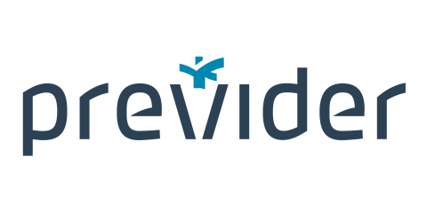

Samen met Artific zijn we bezig de AI-Notaris Assistent te ontwikkelen. De eerste resultaten zijn veelbelovend en gaan wel wat in beweging zetten in het “notaris landschap”!

Het AI-platform voor organisaties
Wij maken AI die werkt.En blijft werken.
Eén veilig en gecontroleerd platform waarop je AI-assistenten en workflows bouwt, uitrolt en beheert. Geen dozijn losse tools.
- EU-gehost
- ISO 27001
- API-first
- Model-agnostisch
Gebouwd door Nederlandse AI-professionals. NL-gehost, AVG-proof en snel inzetbaar. Bespaar 30% van je tijd met één AI-platform.
Vertrouwd door 100+ organisaties



Van ambitie naar uitvoering
Je volgende medewerker is digitaal. Veilig. Voorspelbaar. Transparant.
01
Gebouwd voor echt werk
Artific maakt van AI geen los experiment, maar een betrouwbare collega die je processen kent, je regels volgt en zichtbaar resultaat levert.
Data blijft veilig binnen goedgekeurde bronnen. Monitoring maakt gedrag voorspelbaar. Iedere prompt, tool-call en beslissing blijft transparant.
WorkflowKlantvraag afhandelenActief
1Inkomend berichtE-mail · Nederlands✓
2Kennis ophalen3 geverifieerde bronnen✓
3Antwoord genererenMet privacy safeguard
4GoedkeuringHuman in control○
- Fase 01AI als assistent
De mens beslist, AI helpt met kennis en dagelijkse taken.
- Fase 02AI in je processen
De mens keurt goed, AI voert werk uit binnen context en regels.
- Fase 03AI als autonome collega
AI handelt zelfstandig binnen duidelijke, controleerbare kaders.
02
De operationele laag
Van krachtige modellen naar betrouwbaar werk.
Artific zit tussen de AI-modellen en jouw processen. De intelligentie van GPT, Claude en Gemini wordt zo veilig, voorspelbaar en transparant inzetbaar.
Maak een afspraak
AI-modellenGPTClaudeGemini
ArtificControlelaag
Jouw processenCRME-mailWorkflows
SafeguardsGovernanceAudit trail
Eén platform. Drie manieren om te versnellen.
Begin klein. Bouw door. Houd grip.
Iedere module werkt zelfstandig en wordt sterker wanneer je ze combineert.
-
01
AI Assistant
Een virtuele medewerker op maat, met een eigen rol en gecontroleerde toegang tot jouw kennis en tools.
- Interne kennisbank
- Klantenservice
- Verkoopassistent
-
02
AI ToolBox
Bouw herhaalbare workflows één keer en geef iedere medewerker veilige AI-tools voor dagelijks werk.
- Genereren
- Samenvatten
- Analyseren
-
03
Conversation Module
Laat agents inkomende e-mail lezen, classificeren en een conceptantwoord klaarzetten voor controle.
- Gmail & Microsoft
- Classificatie
- Human in control
Portal
Snel naar productie
Configureer agents, gebruikers en policies in een gebruiksvriendelijke web-app.
Headless
Volledige controle
Integreer dezelfde veilige AI-capaciteiten via API en SDK in je eigen product.
Veilig by design
Controle is geen add-on.
Je data blijft van jou.
- 01 · Data
- Verwerking binnen de EU
- 02 · Toegang
- Alleen binnen afgesproken rollen
- 03 · Bewijs
- Iedere actie terug te vinden
03
Veilig vanaf de basis
Centrale controle zonder innovatie af te remmen.
IT bepaalt de kaders. Teams bouwen daarbinnen. Zo voorkom je AI-wildgroei en blijft iedere assistent controleerbaar.
- 01EU-gehost
Alle data, infrastructuur en processing binnen de EU.
- 02ISO 27001
Onafhankelijke audit van het informatiebeveiligingssysteem, continu onderhouden.
- 03Volledige audit trail
Elke prompt, tool-call en beslissing wordt vastgelegd.
Van idee naar impact
In vijf stappen volledig AI-ontzorgd.
Artific is het veilige fundament. Samen met partners voegen we domeinkennis toe en bouwen we een oplossing die aansluit op jouw organisatie.
- 01Introductie
Intake en AI-strategie
- 02Training
Teams en kennis voorbereiden
- 03Implementatie
Assistenten en workflows bouwen
- 04Aftercare
Monitoren en optimaliseren
- 05Support
Doorlopende ondersteuning
Wat klanten zeggen
Klantbeoordelingen
6 klantbeoordelingen
Meer dan 100 klanten laten AI voor zich werken. Onder meer Basic-Fit, Eneco, Marktplaats, hollandsnieuwe, Gemeente Den Haag, RTV Oost, Veiligheidsregio Zuid-Limburg en Vechtsteden Notarissen.
Artific heeft voor ons alle bestaande bedrijfsprocedures met AI uitgerust. Wat een geweldige resultaten en wat een top bedrijf om mee samen te werken!
De AI Roadmap van Artific heeft tot veel nieuwe inzichten binnen onze organisatie geleid. Binnen het hele bedrijf is gekeken naar de potentie van AI. Echt een aanrader dus.
Binnen Webton werken we sinds september 2023 met de tooling van Artific. Op het gebied van online marketing heeft Artific ons geholpen nog efficiënter en effectiever te werken.
De custom made AI-Assistent / Chatbot die voor onze klanten ontwikkeld is werkt uitstekend. Mooi om te zien hoe elke (Reseller) klant deze met open armen ontvangt.
De Artific AI-Assistent werkt als een trein. In drie weken tijd hebben we al een enorme bespaard op personele kosten en de kwaliteit van onze support is alleen maar beter geworden.
Artific is uitgeroepen tot AI Company of the Year 2025 tijdens de Nationale AI Awards.
Samen slimmer werken
Artific vormt het middelpunt van je AI-ecosysteem.
Bekende organisaties bouwen veilig verder op één platform dat mensen, kennis en processen met elkaar verbindt.